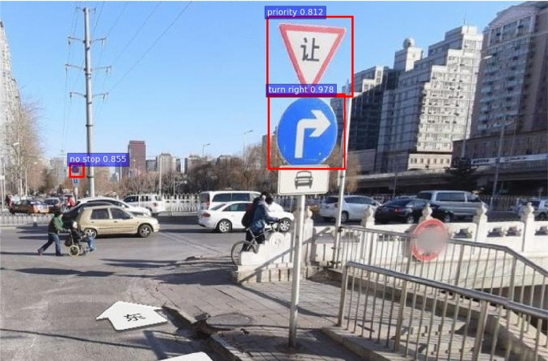

Implemented a YOLOv5-based Traffic Sign Detection Model using deep learning to accurately perform real-time detection of four distinct traffic sign classes: Traffic Light, Stop, Speed Limit, and Crosswalk.
Built a model that can predict the NBA's Most Valuable Player using Linear Regression, Ridge, Random Forest, and Boosted Trees.
Performed Time Series Analysis on monthly weather patterns in Downtown Los Angeles using the SARIMA and Lagged Regression methods. The purpose of this study is to gain insights into the presence of global warming, understand seasonal variations, and identify any significant trends or patterns in the weather data.

Created an interactive sales dashboard in Tableau to explore the yearly history of video games through the use of various parameters and filters. The dashboard is able to sort by geographical region, time range(years), publishers, video game titles, and much more.
I delve into the World Happiness Report 2023, a rich dataset offering insights into the factors influencing subjective well-being across diverse countries. This approach aimed to provide a better understanding of the factors impacting individuals' life satisfaction in North America, and to uncover meaningful patterns.
Performed Data Analysis on the Global YouTube Statistics 2023 Dataset to understand factors influencing the success of top YouTube channels worldwide. I explore the relationships between subscriber counts, video views, highest yearly earnings, and explore the possibilities of creating a machine learning model that can predict any channel's subscriber counts.